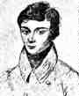

Fall 2009
Elizabeth S. Allman
MTW 9:15-10:15 and M 2:15-3:15
| Due date | Problems | Readings | |
| 1 | F Sept 18 | p. 14: 4-9, 13 p. 28: 4, 5, 6, 14 |
Chapters 1, 2 |
| 2 | F Sept 25 | p. 46: 3.1a, 3.2a, 3.3a, 4-6, 8, 9, 13, 14, 16, 17 p. 55: 2-5, 10 p. 174: 8, 9, 11 |
Chapters 3, 4, 5.1-5.2, 16, 17.1-17.2 |
| 3 | F Oct 2 | 1) Express f(x1,x2,x3) = x1^4 + x2^4 + x3^4 as a function
of the elementary symmetric polynomials 2) Dummit and Foote, p. 618, # 22 3) Prove remaining case [(c) --> (b)] from proof in class W Sept 23 4) Let Q denote the rational numbers and C the complex numbers. Show that the set of elements of C that are algebraic over Q is countable. p. 64: 1-9 p. 73: 1, 2, 7, 8, 10, 12 - 14 |
Finish reading Chap 5, then read Chap 6 and Section 17.3 |
| 4 | F Oct 9 | 1) Dummit and Foote, p. 551, #3, 4 (Equivalently, Suppose p is a prime. Prove that x^(p^d) - x | x^(p^n) - x iff d | n.) p. 114: 1, 2, 5, 6-8 |
We will skip Chapters 7 and 8 for the time being, though you might
want to look at 8 to get a "feel" for Galois theory. Read Sections 9.1, 9.2, and 9.3. (Splitting fields, normality, separability) Read Section 17.3, 17.4, and 17.5 (Abstract context) |
| 5 | F Oct 16 | Dummit and Foote, p. 551, #5 - 7 Stewart, p. 130, #2, 5, 7a-c Given an example (or prove that none exists) of fields K \subset L \subset M so that L is a normal extension of K and M is a normal extension of L, but M is not a normal extension of K. Conclude that there is/is not a `transitive' property for normal field extensions. |
Read Section 13.5 from Dummit and Foote (Separability and the Frobenius map) Read Chapters 10 and 11 from Stewart. We will address the topics in Chapter 10 towards the end of the week. |
| 6 | F Oct 23 | Stewart, p. 123, #2-5 p. 135, #1, 3-6 p. 188, #8b, 9-12, 14 Note: 10-12 may be postponed, depending on our progress. |
Read Chapter 12 and Section 17.6 from Stewart. |
| 7 | F Oct 30 | Stewart, p. 141, #7, 9, 10 Dummit and Foote, p. 617, #2, 3, 17, 18 |
Read Chapter 13 and Section 18.1-3, 18.5 from Stewart. (You can skim 18.4 if you like.) Good supplementary reading is D&F, Section 14.6 |
| 8 | F Nov 6 | Stewart, p. 259, #4, 9 Dummit and Foote, p. 617, #4-9, 19 A rough outline of a project idea is due M Nov 16. |
Read Chapter 22 and Chapter 7 from Stewart. (Time permitting, start Chapter 14.) (Time permitting, read D&F, Section 14.7) Think about projects. A good project might be to read the reference given on p. 618 D&F. You will need at least one reference for your project suggestion. |
| 9 | F Nov 13 | Stewart, p. 151, #2 Stewart, p. 161, #1, 4, 5, 6, 7, 12 A rough outline of a project idea is due M Nov 16. |
Read Chapters 14 and Chapter 15 from Stewart. |
| 10 | M Nov 23 | Stewart, p. 249 #6-9, 11, 12 Dummit & Foote: p. 555 # 3, 5 |
Read Chapter 21 from Stewart and Section 13.6 from D&F. If you have not done so already, read Chapter 7 Stewart |
| M Dec 14 | Jason's talk on Differential Galois Theory |